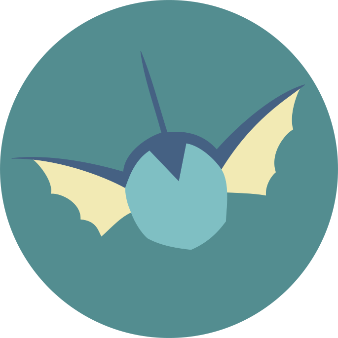

Interventions
L'Observatoire Sociolinguistique se destine à la diffusion de travaux scientifiques et de connaissances dans le domaine du langage au sens large, ainsi qu'à la création et la diffusion d'outils. Dans cette perspective, l'association propose différents types d'interventions - formations, cours, conférences - à destination de tous types de publics - établissemens scolaires et supérieurs, associations, entreprises...
Thématiques abordées (liste non-exhaustive) :
- Discours de haine et violences verbales
- Contre-discours et discours alternatifs à la haine
- Interactions et réseaux sociaux
- Interactions et communication non-violente
- Langage, genres et sexualités
- Langage, idéologies, pouvoir
- Langue de bois et manipulation
- Insécurités linguistiques et dominations linguistiques
- Contact de langues, minorités linguistiques
- Orthographe et normes linguistiques
- Systèmes d'écritures, diversités et normes
Intervenants
-

Claire Hugonnier (clairehugonnier@tuta.io)
Chercheuse en médiation langagière et culturelle à l'Université Grenoble Alpes, laboratoire LIDILEM.
-

Samuel Vernet (samuelvernet@tuta.io)
Chercheur en Sciences du langage à l'Université Aix-Marseille, laboratoire LPL.